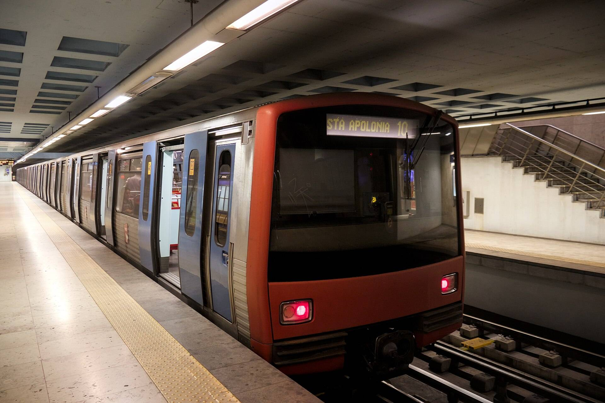

Board where the exit is.
Live departures, delays and the fastest exit at every Lisbon metro station.

Both lines, both ways.
Pick an interchange: every train through it, to the minute.
| Line | To | Next | Then | Status |
|---|---|---|---|---|
| Green | Cais do Sodré | 1 min | 6 min | On time |
| Green | Telheiras | 3 min | 9 min | On time |
| Red | Aeroporto | 2 min | 8 min | On time |
| Red | São Sebastião | 5 min | 14 min | 4 min late |
Live in the app Sample times on this page.
Step off at the stairs.
The exit screen names the carriage that stops nearest your way out.
- FrontCarriage to board
- LeftEscalators up
- ChiadoExit to the street
A sample route at Baixa-Chiado.
Late lines, before the gates.
Every line’s state, before you tap in.
- Blue lineReboleira to Santa Apolónia3 min late
- Yellow lineOdivelas to RatoOn time
- Green lineTelheiras to Cais do SodréOn time
- Red lineSão Sebastião to AeroportoOn time
Free, at every station.
Every line, from the street to the platform and back.